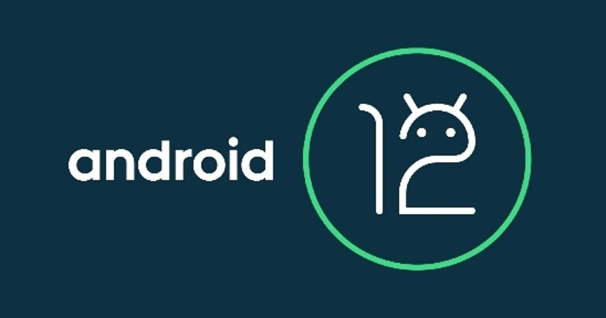

Modulo 4
Sistema Operativo
Sistemas Operativos para ordenador de escritorio
14-05-2022
Los sistemas operativos de escritorio como su nombre lo dice estan hechos para dispositivos de escritorio, osea computadoras o laptops, la mayoria de estos son muy
reconocidos, por lo que se mencionara a los mas destacables.
Windows
Posiblemente es el mas conocido, Windows fue creado por Microsoft en 1985 originalmente fue creado como una idea de darle un apartado grafico a los sistemas operativos y agregando uno que otro apoyo de software, volviéndose mundialmente famoso siendo casi el 80% de sistemas operativos de todos lo ordenadores ya sean de escritorio o laptops y hasta la fecha sigue sacando mas versiones, se resaltaran las características de las ultimas 3 versiones para clientes que han salido en este siglo.Ubuntu
Ubuntu es un Sistema operativo de Linux de código abierto este está orientado al usuario promedio, con un fuerte enfoque en la facilidad de uso y en mejorar la experiencia del usuario. Y se cree que este tiene el 52% de la cuota de mercado de todos los ingresos de Linux. Ofrece el sistema de manera gratuita, y se financia por medio de servicios vinculados al sistema operativo y soporte técnico.
Sistemas operativos para android
Ahora le toca a los sistemas operativos adaptados a dispositivos moviles, los dispositivos mas accesibles delmun. Estos sistmas operativos son un poco mas discretos ya que no se manipulan como los de escritorio, estos se efocan mucho mas en la implementacion de tecnologias comunicativas y de busqueda novedosas y en la organizacion del dispositivo.Android
Android es el nombre de la línea de sistemas operativos que se emplea para dispositivos móviles, pero también existen para automóviles, televisores entre otras máquinas, este sistema operativo fue creado por Android Inc. Perteneciente a Google en 2005, su sistema operativo está construido en Unix. Este OS se enfoca en la seguridad y la salud del cliente y del dispositivo, mejorando la experiencia que tendrá el cliente con novedades en los registros de contactos, ofreciendo un sistema de subtitulado, algunos caracteres extras en las aplicaciones de mensajería y un manejo de la información personal o notificaciones.

IOS
IOS es otro sistema operativo hecho para dispositivos móviles, prácticamente es la competencia de Android, este es mucho más cerrado así que no se cuenta con una personalización tan destacable ni mediación de terceros y posee una seguridad muy alta así que desencriptar los datos de este es imposible.Sistemas operativos para servidor
Y para cerrar con los sistemas operativos se mencionara los OS mas utilizados para el manejo de servidores, estos destacan por su velocidad de respuesta, seguridad y uno en especial por su robustes.Windows Server
Windows server es la línea de sistemas operativos orientados al soporte de servidores y este al igual que su línea para clientes se debe pagar por una licencia y usado por las organizaciones que emplean servidores con el fin de desarrollar aplicaciones usando ASP NET. O que maneje base de datos en SQL server o Access. Este esta desarrollado con lenguaje C++ y Asambler, este es un sistema de multiproceso y multiusuario y es la principal razón por la que las empresas lo usan para el manejo de datos, clientes y cuentas, y que pueda ser manejado por cada uno de sus empleados. Este nació en 2003 por Microsoft que no esta de mas destacarlo, este fue creado con el fin de ser el servidor de archivos, impresiones y web de las empresas medianas. Sus versiones se nombran por la fecha en la que salió por ejemplo Windows Server 2003.CentOS
CentOs es la línea de servidores creada y comercializada por Linux, es un sistema operativo de tipo abierto basado en Red Hat Enterprise Linux para su distribución, manejo, etc. Este tiene el objetivo de ofrecerle a las empresas pequeñas un sistema operativo gratuito. Red Hat Enterprise Linux es esencial para la operación de CentOS debido a que este abre el código fuente y se usa ese código para que se pueda desarrollar el resultado final que sea compatible con Red Hat Enterprise Linux.Actividades del Modulo
|

© 2022 Grupo5
© Derechos reservados